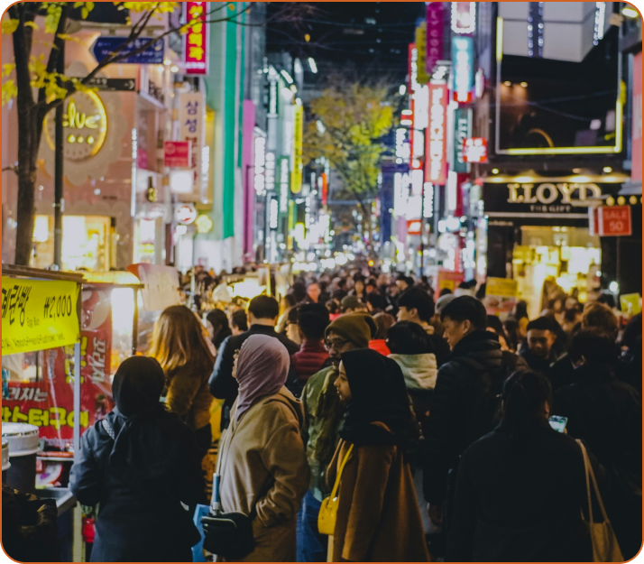

Crescimento Populacional
A produção de alimentos precisa crescer 70% até 2050
Segundo a FAO, a população global aumentará, elevando a pressão sobre a produção de alimentos. Isso exige mais eficiência, mais precisão e mais resiliência para garantir qualidade, disponibilidade e sustentabilidade.
-
Meta 2050
+70%
aumento na produção de alimentos
-
Área para biocombustíveis
35M
hectares estimados até 2030

Mudanças Climáticas
O clima afeta a produção, a água e a segurança alimentar
A agricultura é a principal fonte de alimentos para a humanidade, mas a produção em larga escala gera impactos ambientais significativos. A poluição da agropecuária, somada a outros fatores industriais, intensificou o aquecimento global. Como consequência, as mudanças climáticas já afetam diretamente a produção de alimentos, ameaçando a segurança alimentar por meio de secas, eventos extremos e perda de produtividade.
-
1
Secas e eventos extremos +
Secas prolongadas, enchentes e ondas de calor prejudicam as lavouras, reduzem a produtividade e podem limitar a oferta de alimentos, elevando os preços.
-
2
Escassez de água +
A agricultura e a pecuária respondem por cerca de 70% do consumo de água doce do planeta, tornando a gestão hídrica um dos maiores fatores de risco para a segurança alimentar global.
-
3
Pressão sobre a sustentabilidade +
A produção em larga escala gera impactos ambientais significativos, desafiando a capacidade do planeta de manter a segurança alimentar de forma sustentável no longo prazo.

O Que Fazer
Inovação, responsabilidade e consumo consciente
Para reverter esse cenário, governos e sociedade civil precisam atuar juntos. Financiamentos para agricultura de precisão, sistemas integrados como lavoura-pecuária-floresta e hábitos de consumo mais conscientes podem ajudar a reduzir o impacto ambiental sem comprometer a segurança alimentar.
-
1
Incentivar a transição para uma agricultura de baixo carbono
-
2
Adotar hábitos de consumo consciente e combater o desperdício de alimentos
-
3
Unir inovação tecnológica com responsabilidade ecológica